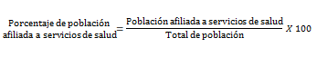
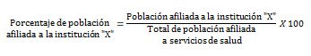

Población afiliada a alguna institución que brinda servicios de salud, pública o privada, en relación con la población total, expresada por cada cien.
Población afiliada a servicios de salud para cada una de las instituciones, en relación con el total de población afiliada, expresada por cada cien.
Para calcular el porcentaje de afiliación que representa alguna institución de salud, se divide el total de los afiliados a la institución de interés entre el total de la población afiliada a servicios de salud y se multiplica el resultado por cien.
La suma de porcentajes de las instituciones puede ser más de 100% debido a que una persona puede estar afiliada a más de una institución.
Donde "X" representa alguna de las siguientes instituciones:
Fuente:INEGI. Encuesta Intercensal 2015.
Nota:Los indicadores presentados son estimadores obtenidos a partir de la Encuesta Intercensal 2015.